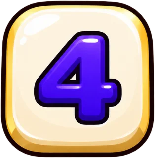
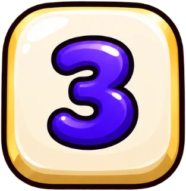
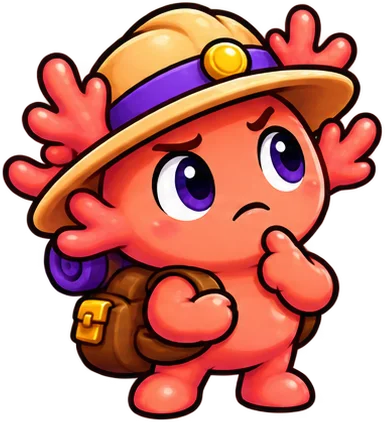

2 players will play this game. You and computer. Each player will roll the dice turn by turn. Both the players will start from the "Zero"

= +4

= −3
Roll the sign die and the number die. Together they give you an integer number like +4 or −3. You have to move your explorer as many steps on the board as the number appear on the dice.

For a positive number, you will move forward and for the negative number, you moves down toward the deep sea!
If you find a ladder, climb up the ladder. It can take you to the mountain top faster. But if snake bites, you will slide down the tail. First explorer to reach +50, will win!